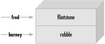

5.2 Hash Element Access
To access an element of a hash, use syntax that looks like this:
$hash{$some_key}
This is similar to what we used for
array access, but here we use
curly braces instead of square brackets around the subscript
(key).[6]
And that key expression is now a string, rather than a
number:
[6]
Here's a peek into the mind of Larry Wall: Larry says that we use
curly braces instead of square brackets because we're doing
something fancier than ordinary array access, so we should use
fancier punctuation.
$family_name{"fred"} = "flintstone";
$family_name{"barney"} = "rubble";
Figure 5-2 shows how the
resulting hash keys are assigned.
Figure 5-2.
Assigned hash keys

This lets us use code like this:
foreach $person (qw< barney fred >) {
print "I've heard of $person $family_name{$person}.\n";
}
The name of the hash is like any other Perl identifier (letters,
digits, and underscores, but can't start with a digit). And it's
from a separate namespace; that is, there's no connection between
the hash element $family_name{"fred"}
and a subroutine &family_name,
for example. Of course, there's no reason to confuse everyone by
giving everything the same name. But Perl won't mind if you also
have a scalar called $family_name
and array elements like $family_name[5].
We humans will have to do as Perl does; that is, we'll have to
look to see what punctuation appears before and after the
identifier to see what it means. When there is a dollar sign in
front of the name and curly braces afterwards, it's a hash element
that's being accessed.
When choosing the name of a hash,
it's often nice to think of the word "of" between the
name of the hash and the key. As in, "the family_name
of fred is flintstone".
So the hash is named family_name.
Then it becomes clear what the relationship is between the keys
and their values.
Of course, the hash key may
be any expression, not just the literal strings and simple
scalar variables that we're showing here:
$foo = "bar";
print $family_name{ $foo . "ney" }; # prints "rubble"
When you store something into an existing hash element, that
overwrites the previous value:
$family_name{"fred"} = "astaire"; # gives new value to existing element
$bedrock = $family_name{"fred"}; # gets "astaire"; old value is lost
That's analogous to what happens with arrays and scalars; if you
store something new into $pebbles[17]
or $dino, the old value is
replaced. If you store something new into $family_name{"fred"},
the old value is replaced as well.
Hash elements will spring into existence by assignment:
$family_name{"wilma"} = "flintstone"; # adds a new key (and value)
$family_name{"betty"} .= $family_name{"barney"}; # creates the element if needed
That's also just like what happens with arrays and scalars; if you
didn't have $pebbles[17] or
$dino before, you will have
it after you assign to it. If you didn't have
$family_name{"betty"}
before, you do now.
And accessing outside the hash gives undef:
$granite = $family_name{"larry"}; # No larry here: undef
Once again, this is just like what happens with arrays and
scalars; if there's nothing yet stored in $pebbles[17]
or $dino, accessing them
will yield undef. If there's
nothing yet stored in $family_name{"larry"},
accessing it will yield undef.
5.2.1 The Hash as a Whole
To refer to the entire
hash, use the percent sign ("%")
as a prefix. So, the hash we've been using for the last few
pages is actually called %family_name.
For convenience, a hash may be converted into a list, and back
again. Assigning to a hash
(in this case, the one from Figure
5-1) is a list-context assignment, where the list
is made of key-value pairs:[7]
[7]
Although any list expression may be used, it must have an even
number of elements, because the hash is made of key-value pairs.
An odd element will likely do something unreliable, although it's
a warnable offense.
%some_hash = ("foo", 35, "bar", 12.4, 2.5, "hello",
"wilma", 1.72e30, "betty", "bye\n");
The value of the hash (in a list
context) is a simple list of key-value pairs:
@any_array = %some_hash;
We call this
unwinding the hash; turning it back into a list of
key-value pairs. Of course, the pairs won't necessarily be in the
same order as the original list:
print "@any_array\n";
# might give something like this:
# betty bye (and a newline) wilma 1.72e+30 foo 35 2.5 hello bar 12.4
The order is jumbled because Perl
keeps the key-value pairs in an order that's convenient for Perl,
so that it can look up any item quickly. So you'd normally use a
hash either when you don't care what order the items are in, or
when you have an easy way to put them into the order you want.
Of course, even though the order of the key-value pairs is
jumbled, each key "sticks" with its corresponding value
in the resulting list. So, even though we don't know where the key
foo will appear in the list,
we know that its value, 35,
will be right after it.
5.2.2 Hash Assignment
It's rare
to do so, but a hash may be copied using the obvious syntax:
%new_hash = %old_hash;
This is actually more work for Perl than meets the eye. Unlike
what happens in languages like Pascal
or C, where such an operation would be a simple matter of copying
a block of memory, Perl's data structures are more complex.
So, that line of code tells Perl to unwind the %old_hash
into a list of key-value pairs, then assign those to %new_hash,
building it up one key-value pair at a time.
It's more common to transform the hash in some way, though. For
example, we could make an inverse hash:
%inverse_hash = reverse %any_hash;
This takes %any_hash and
unwinds it into a list of key-value pairs, making a list like
(key, value, key, value,
key, value, ...). Then
reverse turns that list
end-for-end, making a list like (value,
key, value, key, value, key, ...).
Now the keys are where the
values used to be, and the values are where the keys used to be.
When that's stored into %inverse_hash,
we'll be able to look up a string that was a value in
%any_hashï¾—it's
now a key of %inverse_hash.
And the value we'll find is one that was one of the keys from
%any_hash. So,
we have a way to look up a "value" (now a key),
and find a "key" (now a value).
Of course, you might guess (or determine from scientific
principles, if you're clever) that this will work properly only
if the values in the original hash were uniqueï¾—otherwise
we'd have duplicate keys in the new hash, and keys are always
unique. Here's the rule that Perl uses: the last one in wins. That
is, the later items in the list overwrite any earlier ones. Of
course, we don't know what order the key-value pairs will have in
this list, so there's no telling which ones would win. You'd use
this technique only if you know there are no duplicates among the
original values.[8] But that's the case for the IP
address and host name examples given earlier:
[8] Or
if you don't care that there are duplicates. For example, we could
invert the %family_name hash
(in which the keys are people's given names and values are their
family names) to make it easy to determine whether there is or is
not anyone with a given family name in the group. Thus, in the
inverted hash, if there's no key of slate,
we'd know that there's no one with that name in the original hash.
%ip_address = reverse %host_name;
Now we can look up a host name or IP address with equal ease, to
find the corresponding IP address or host name.
5.2.3 The Big Arrow
When assigning a list to a hash, sometimes it's not obvious which
elements are keys and which are values. For example, in this
assignment (which we saw earlier), we humans have to count through
the list, saying, "key, value, key, value...", in order
to determine whether 2.5 is
a key or a value:
%some_hash = ("foo", 35, "bar", 12.4, 2.5, "hello",
"wilma", 1.72e30, "betty", "bye\n");
Wouldn't it
be nice if Perl gave us a way to pair up keys and values in that
kind of a list, so that it would be easy to see which ones were
which? Larry thought so, too, which is why he invented the big
arrow, (=>).[9]
To Perl, it's just a different way to "spell" a comma.
That is, in the Perl
grammar, any time that you need a comma ( ,
), you can use the big arrow instead; it's all the same to
Perl.[10] So here's another way to set up
the hash of last names:
[9] Yes, there's also a little arrow, (->).
It's used with references, which are an advanced topic; see the
perlreftutand perlrefmanpage when you're ready for that.
[10]
Well, there's one technical difference: any
bareword (a sequence of nothing but letters, digits, and
underscores not starting with a digit) to
the left of the big arrow is implicitly quoted. So you can
leave off the quote marks on a bareword to the left of the big
arrow. You may also omit the quote marks if there's nothing but a
bareword as a key inside the curly braces of a hash.
my %last_name = ( # a hash may be a lexical variable
"fred" => "flintstone",
"dino" => undef,
"barney" => "rubble",
"betty" => "rubble",
);
Here, it's easy (or
perhaps at least easier) to see whose name pairs with which value,
even if we end up putting many pairs on one line. And notice that
there's an extra comma at the end of the list. As we saw earlier,
this is harmless, but convenient; if we need to add additional
people to this hash, we'll simply make sure that each line has a
key-value pair and a trailing comma. Perl will see that there is a
comma between each item and the next, and one extra (harmless)
comma at the end of the list.
|